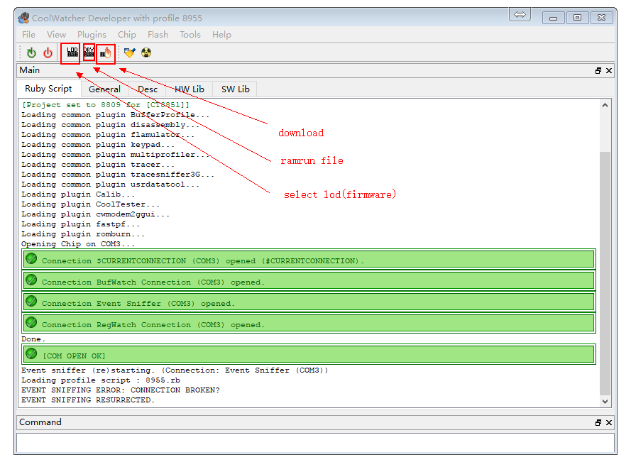
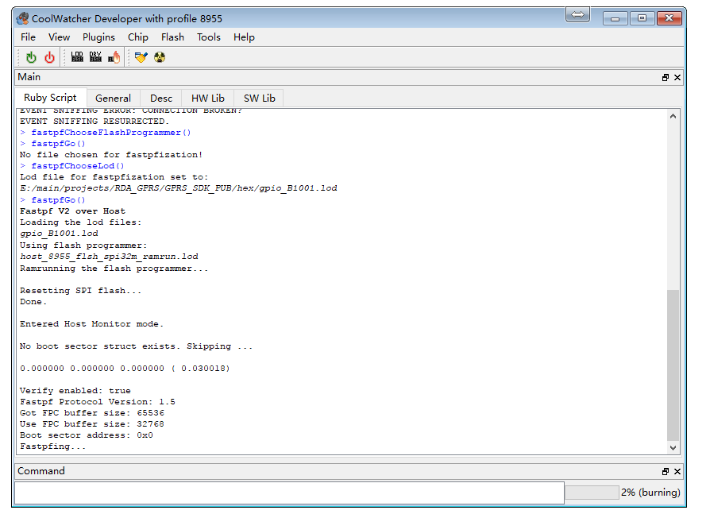
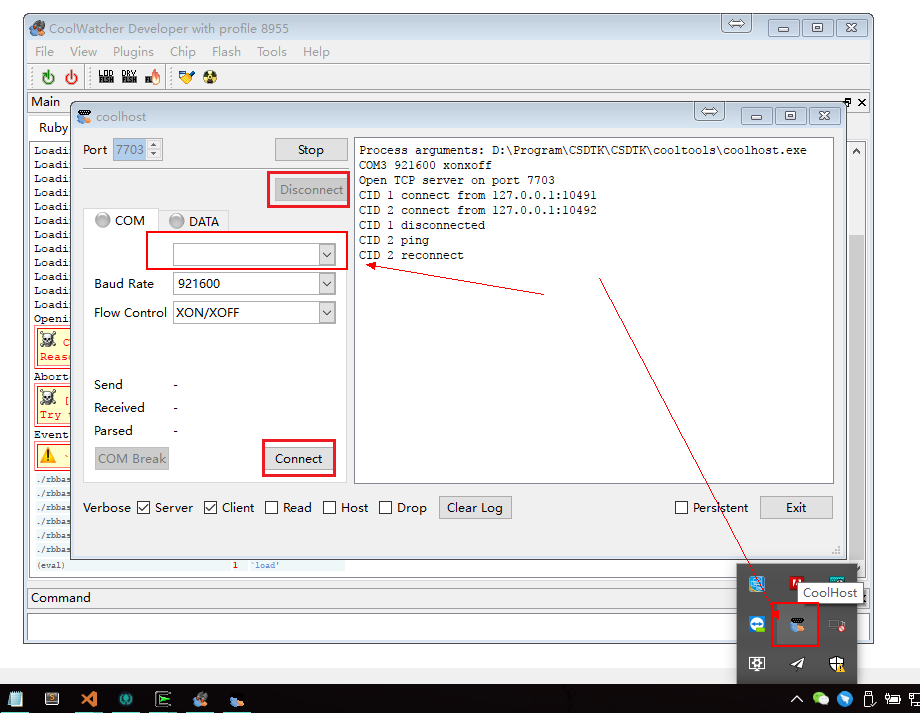
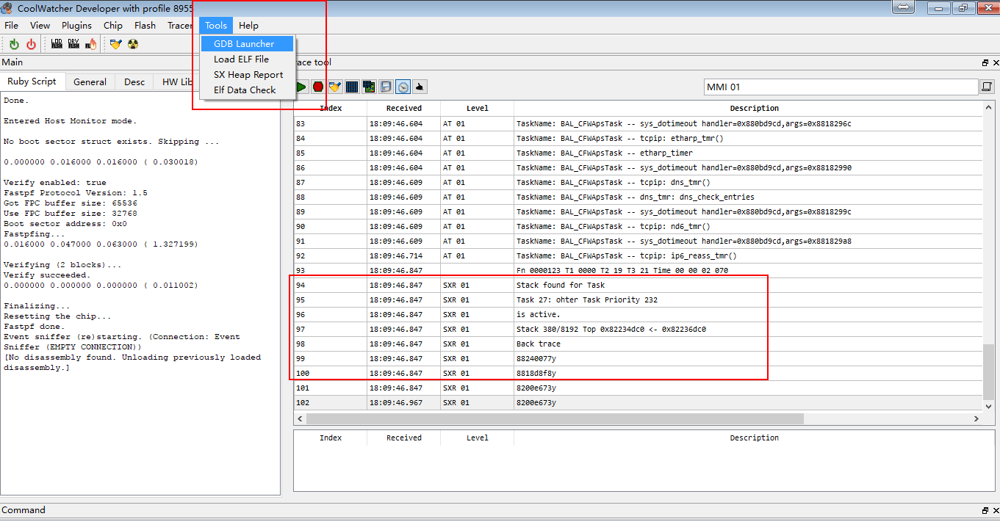
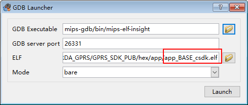

GPRS 下载调试说明
1. 硬件连接
模块的调试下载接口是
HST接口，即引脚HST_RX和HST_TX脚分别连接连接USB转串口模块的TX和RX引脚（交叉连接,HST_RX接TX）电源可以接锂电池电压（即3.8v~4.2v）（VBAT引脚）,也可以接5v电源（5v输入引脚或者USB输入），需要注意的是，如果使用锂电池供电，上电后需要按POWER KEY3秒左右让模块开机，USB供电则会上电自动开机。 在下载或者调试时要确保已经开机。
2. Linux
- Install dependences
sudo apt install build-essential libqt4-qt3support itcl3 itk3 iwidgets4
- Create a link file for serial port as follow, and later you can fill in the coolwatcher's chart with
1,theCOM1must upper-case
sudo ln -s /dev/ttyUSB0 comport/COM1
- Then double click
coolwatcherto run software
3. 下载步骤
将
coolwatcher更新到最新版本(coolwatcher在CSDTK文件夹下)打开
CSDTK/cooltools/coolwatcher.exe左边
profiles选项选择8955，右边需要设置lastcomport为连接模块下载调试串口(HST)的端口</br> </br>
点击Ok
</br>
点击Ok等待连接成功，出现以下界面</br> </br>
如果出现连接失败的情况，请参考 coolwatcher 无法连接原因部分
如果第一次使用，需要点击DRY图标，选择名字包含
8955 ramrun spi32m .lod的文件（在工程platform/ramrun下或者coolwatchercooltools\chipgen\Modem2G\toolpool\plugins\fastpf\flash_programmers目录下）。 只需要设置一次，后面都会记住的点击下图中的lod图标，选择编译生成的固件，在工程hex目录下
.lod格式的文件，首次下载下载文件体积较大的.lod格式文件，后面为了加快下载速度只需要下载体积较小的固件文件即可点击 download图标，进行下载，正常效果如下图，右下角Command栏会有进度标志</br> </br>
如果下载失败，请参考 coolwatcher 下载失败原因部分
4. coolwatcher无法连接

解决方法：
保证串口和模块已经连接（注意开发板上的USB口不是串口，下载串口是通过USB转串口模块连接
HST_RX和HST_TX引脚，注意是交叉连接，即GPRS模块的HST_RX连接USB转串口模块的TX）保证串口没有被其它软件占用
检查串口号是否选择错误，重新启动的时候设置串口号，或者不重启 点击右下角CoolHost图标来设置</br> 
然后点击connect重新连接串口
5. coolwatcher无法下载

ramrun文件错误，分别尝试使用工程目录
platform/ramrun下 和 coolwatcherCSDTK\cooltools\chipgen\Modem2G\toolpool\plugins\fastpf\flash_programmers目录下的*_8955_*_spi32m_ramrun.lod有可能程序进入了休眠模式，按模块复位键复位后再下载
串口有可能掉了，任务栏右下角双击CoolHost图标重新连接串口，再下载
串口其它问题，拔掉USB转串口模块重新插入电脑，再进行上一步重新连接串口
程序中开机就进入了睡眠模式 或者 有线程使用了
while(1)死循环而且完全占用了资源，比如:void LoopTask(VOID *pData) { uint64_t count = 0; while(1) { ++count; if(count == 3000) { count = 0; Trace(1,"Test Test"); } } }解决： 按下模块复位键，在USB转串口模块数据传输指示灯闪烁（即模块已经启动并向串口发送数据）的一瞬间按下下载按钮即可，不行就多试几次 为了彻底防止这种问题，建议不要写这种程序，在循环中最好使用事件触发或者至少延时
OS_Sleep())一下，比如：void LoopTask(VOID *pData) { uint64_t count = 0; while(1) { ++count; if(count == 3000) { count = 0; Trace(1,"Test Test"); OS_Sleep(100); } } }或
void LoopTask(VOID *pData) { uint64_t count = 0; while(1) { ++count; if(count == 3000) { count = 0; Trace(1,"Test Test"); } } OS_Sleep(1); }或 事件处理
void AppMainTask(VOID *pData) { API_Event_t* event=NULL; while(1) { if(OS_WaitEvent(mainTaskHandle, &event, OS_TIME_OUT_WAIT_FOREVER)) { EventDispatch(event); OS_Free(event->pParam1); OS_Free(event); } } }
6. 调试
Tracer基本介绍及使用
- 查看debug信息：打开
Plugins->Active Tracer，界面及功能如下图
使用前需要设置Tracer，设置如下如1~6步：
- 程序中需要输出调试信息可以调用
api_debug.h中的bool Trace(uint16_t nIndex,const char* fmt, ...)函数，其中nIndex就是对应tracer设置中的MMI 01~MMI 16
Tracer使用容易遇到的问题
- 有时候自己期望的调试数据没有显示，有可能是点了右上角的暂停显示最新的按钮，忘了关闭！！
- 刚开机的时候Trace模块可能还没启动完成，可能会出现开始部分信息没有打印的情况
死机处理
这里模拟了一个异常，空指针赋值的异常，一般出现这种问题都是指针乱飞的问题！ 打开GBD，并设置选择elf文件


打开GBD终端，输入bt 或者bt f查看信息

需要注意的是，这个GDB并不是在并不支持手动打断点功能，打断点需要在代码中写入断点语句才行，所以只用它来查看死机信息就行了，当死机后再用它！
如果觉得这个GDB调试功能不是很好用，可以用打印调试信息的方式来调试bug
如果遇到问题，参见文档中的常见问题，也可以在issue里找有没有先例